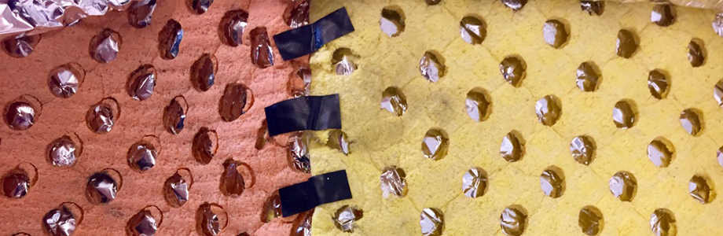
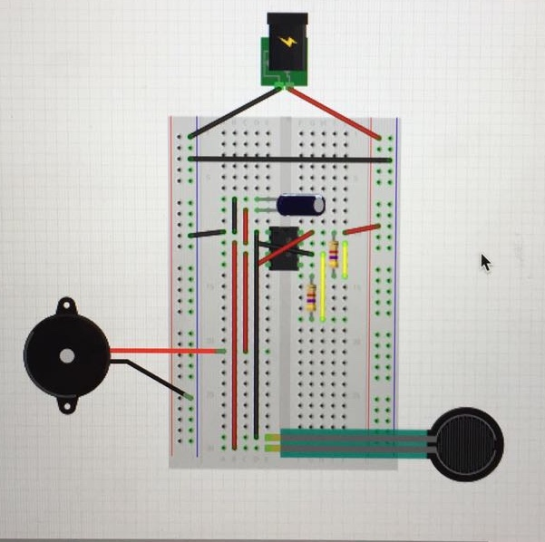

Somnolencia
Proyecto Segundo semestre 2018
Cojín sonoro
 Conexión circuito sonoro (alarma), pero el sensor de presión es sustituido por un soft sensor hecho a mano por nosotras (Fernanda Cabello)

Circuito utilizado 
Memoria
SOMNOLENCIA consiste en una almohada blanca para dormir, que estará instalada en el respaldo de un asiento del metro de Santiago. Esta sonará cada vez que alguien realice presión con su cabeza sobre el cojín. El proyecto instala la idea de la sociedad dormida, ya que los individuos están sometidos a una gran presión para obtener el mejor rendimiento posible en el trabajo, dejando de lado los valores y el carácter emocional del ser humano.
Vivimos en una sociedad donde todos estamos acostumbrados a vivir en una sociedad rutinaria: levantarnos de la cama, asearnos, tomar desayuno, ir de la casa al trabajo y del trabajo a la casa para dormir y así se repite el ciclo. Vivimos en nuestra zona de confort, en un terreno conocido. Seguimos una especie de patrón que nosotros mismos creamos para sentirnos más seguros. Necesitamos de un incentivo constante para realizar las cosas que no estén relacionadas con la eficiencia laboral.
“El sujeto del rendimiento se cree en libertad, pero está tan encadenado como Prometeo” (Byung Chul, La Sociedad del cansancio).
En esta frase, Chul hace alusión a que el trabajador ya no es explotado, sino que se auto explota él mismo para mejorar su eficiencia, incluso con la ayuda del dopaje. Lo que le lleva a una situación de cansancio permanente e infinito, convirtiéndose en un ente dormido llevado por la idea de poder y eficiencia.
Debemos buscar incentivos que hagan nuestra vida menos rutinaria y menos dedicada a la vida laboral, enfocándose en el bienestar de la persona y no en función del Estado y su funcionamiento económico. Nos interesa que seamos una sociedad consciente y alerta a todo lo que está pasando a nuestro alrededor y no dejarlo pasar solo por el hecho de no tener nada que hacer por nuestro rol predeterminado dentro del orden.
Parece que algunas partes de la sociedad se quedaron dormidas. La guerra psicológica opera para convencernos de que nada vale la pena, que nosotros mismos no la valemos y la guerra económica funciona para caotizar nuestra vida que ahora es un tránsito permanente entre la angustia de conseguir dinero y prestigio que se traduce en infelicidad, en una ceguera social.
Es por esto, que queremos usar chindogu como método de representación. Un concepto japonés que trata a través de objetos sin sentido que no podrían estar a la venta. Estos corresponden a objetos que tratan de solucionar un problema cotidiano, pero acaban siendo inútiles, ya que no satisfacen la necesidad a la que están planteados, sino que más bien aluden a la representación al descontento de un problema específico.
Esta almohada hacer alusión a esa alarma que debemos generar en nosotros mismos y en los demás, esa urgencia por querer despertar y hacer las cosas por medios y fines propios en busca de la plenitud tanto individual, como colectiva para hacer las cosas de manera distinta a la rutinaria para cumplir con nuestro fin como seres humanos, la felicidad y la plenitud en esta vida.